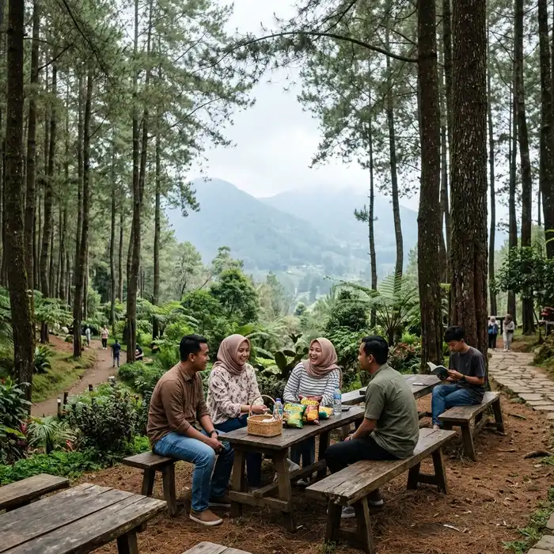

Perlengkapan camping air terjun di Batu wajib mencakup tenda tahan air, sleeping bag hangat, jas hujan, penerangan, alat masak, air minum, dan perlengkapan P3K.
Ringkasan Inti
- Udara dataran tinggi Batu dingin dan lembap, jadi prioritaskan perlengkapan tahan air dan penghangat.
- Barang wajib dikelompokkan menjadi tempat tidur, pakaian, penerangan, dapur, kebersihan, dan keselamatan.
- Pakaian berbahan cepat kering lebih tepat daripada katun di area dekat air terjun.
- Sewa perlengkapan bisa menghemat biaya bagi pemula, asalkan kondisinya diperiksa sebelum dipakai.
Apa Saja Perlengkapan Wajib untuk Camping di Air Terjun Batu?
Perlengkapan wajib camping di air terjun Batu adalah tenda, alas tidur, sleeping bag, jas hujan, lampu kepala, alat masak, air minum, dan kotak P3K.
Kelompokkan barang agar tidak ada yang tertinggal. Pertama, tempat tidur: tenda dome dengan flysheet, footprint atau terpal alas, matras, dan sleeping bag. Kedua, penerangan: lampu kepala, senter cadangan, dan power bank. Ketiga, dapur: kompor portabel, gas, nesting, korek, dan pisau lipat. Keempat, kebersihan: tisu basah, sabun ramah lingkungan, kantong sampah, dan sikat gigi.
Seluruh perlengkapan ini harus dibawa dalam kantong kedap air atau dilapisi plastik. Kelembapan di area air terjun dapat membuat tas biasa lembap dalam semalam.
Bagaimana Memilih Tenda untuk Udara Dingin dan Lembap?
Pilih tenda dome berlapis ganda dengan flysheet penuh, lantai tebal, dan ventilasi yang cukup untuk mengurangi embun serta rembesan air.
Kapasitas tenda sebaiknya satu orang lebih besar dari jumlah penghuni agar tas punya ruang. Periksa jahitan, resleting, dan tiang sebelum berangkat. Pasang terpal tambahan di bawah tenda untuk mengurangi kelembapan tanah.
Hindari tenda murah tanpa lapisan tahan air yang jelas. Di area dekat air terjun, tetesan kabut dan hujan ringan sering datang tiba-tiba. Tenda yang bocor dapat membuat seluruh rombongan kedinginan.

Pemasangan tenda dome berkualitas dengan lapisan tahan air di area perkemahan hutan pegunungan Batu.
Seberapa Dingin Udara Malam dan Apa Dampaknya pada Pilihan Sleeping Bag?
Udara malam di dataran tinggi Batu umumnya dapat turun hingga belasan derajat Celsius, sehingga sleeping bag dengan rating kenyamanan sekitar 10 derajat Celsius atau lebih rendah lebih aman.
Data klimatologi umum dari BMKG menunjukkan suhu pegunungan di Jawa Timur lebih rendah pada malam dan dini hari dibanding siang (pola umum pengamatan 2020 hingga 2025). Nilai persisnya bervariasi menurut titik lokasi, ketinggian, dan cuaca. Karena itu, cek prakiraan cuaca terbaru sebelum berangkat.
Pilih sleeping bag berbahan sintetis jika khawatir lembap, karena lebih cepat kering dibanding isi bulu. Tambahkan liner atau selimut tipis untuk lapisan ekstra. Matras juga penting karena tanah menyerap panas tubuh lebih cepat daripada udara.
Pakaian Apa yang Sebaiknya Dibawa?
Bawa pakaian berlapis berbahan cepat kering, jaket hangat, jas hujan, kaus kaki cadangan, dan alas kaki dengan sol antiselip untuk medan basah.
Prinsip berlapis terdiri dari lapisan dasar yang menyerap keringat, lapisan tengah penghangat, dan lapisan luar tahan angin atau hujan. Hindari jeans karena sangat lama kering saat basah. Bawa satu set pakaian khusus tidur yang selalu dijaga kering di dalam kantong kedap air.
Sandal gunung atau sepatu trekking dengan cengkeraman baik membantu di jalur licin menuju air terjun. Sandal jepit tidak disarankan untuk medan menanjak atau berbatu.
Apa yang Perlu Dibawa untuk Memasak dan Makan?
Untuk memasak saat camping di Batu, bawa kompor portabel, gas cadangan, nesting, korek tahan angin, air bersih, dan makanan yang mudah disiapkan.
Pilih makanan sederhana seperti mi instan, nasi instan, roti, telur, dan minuman hangat. Simpan bahan makanan dalam wadah tertutup rapat agar tidak mengundang serangga atau hewan liar. Bawa air minum secukupnya, karena sumber air di area kemah belum tentu layak minum tanpa dimasak.
Periksa aturan pengelola mengenai penggunaan kompor dan api unggun. Beberapa kawasan hutan membatasi api terbuka demi mencegah kebakaran.
Apa Saja Perlengkapan Keselamatan dan Kesehatan yang Wajib Ada?
Perlengkapan keselamatan minimal terdiri dari kotak P3K, obat pribadi, peluit, lampu kepala cadangan, power bank, dan daftar kontak darurat.
Isi kotak P3K meliputi plester, kasa, antiseptik, obat demam, obat sakit perut, minyak angin, dan salep untuk lecet. Bila ada anggota rombongan yang rutin mengonsumsi obat, bawa dalam jumlah cukup dan simpan di tempat kering. Informasi ini bersifat umum dan tidak menggantikan saran tenaga kesehatan.
Simpan nomor pengelola kawasan dan pastikan sinyal ponsel dicek sejak awal. Di beberapa area hutan, sinyal dapat melemah, sehingga rencana komunikasi perlu disepakati sebelum berangkat.
Apa yang Sering Terlupa Saat Packing?
Barang yang sering terlupa saat packing camping adalah kantong sampah, lampu cadangan, baterai tambahan, tali dan pasak cadangan, serta pakaian kering untuk tidur.
Tambahan lain yang sering terlewat adalah korek api cadangan, tisu basah, sandal untuk di area tenda, dan topi hangat. Buat daftar periksa tertulis, lalu centang saat memasukkan barang ke tas. Cara ini mengurangi risiko tertinggal terutama untuk rombongan besar.
Apakah Menyewa Perlengkapan Lebih Hemat bagi Pemula?
Menyewa perlengkapan umumnya lebih hemat bagi pemula yang belum rutin berkemah, asalkan kondisi barang diperiksa dan harga sewa dibandingkan dengan biaya membeli.
Banyak penyedia sewa tersedia di Batu dan sekitarnya, dengan harga yang bervariasi. Sebelum menyewa, periksa kebersihan tenda, resleting, tiang, dan sleeping bag. Foto kondisi barang saat menerima agar tidak ada sengketa saat pengembalian. Untuk barang personal seperti sleeping bag, pastikan kebersihannya terjaga.
Bagaimana Cara Packing yang Rapi dan Tahan Air?
Packing yang baik memakai tas carrier dengan pembagian beban, kantong kedap air untuk pakaian, dan barang berat diletakkan dekat punggung bagian tengah.
Pisahkan barang berdasarkan fungsi dalam kantong terpisah: pakaian kering, pakaian kotor, makanan, dan peralatan masak. Gunakan rain cover untuk tas atau lapisi dengan kantong sampah besar. Barang yang dibutuhkan cepat, seperti jas hujan dan lampu kepala, diletakkan di bagian atas atau saku luar.
FAQ
Sleeping bag sangat disarankan karena udara malam di dataran tinggi Batu dingin dan lembap. Selimut biasa umumnya kurang hangat dan mudah menyerap lembap, terutama bila tenda terkena embun.
Tenda biasa cukup jika berlapis ganda, memiliki flysheet penuh, dan dalam kondisi baik. Tenda tanpa lapisan tahan air berisiko bocor saat hujan atau kabut tebal di area dekat air terjun.
Umumnya boleh, tetapi aturan berbeda untuk setiap pengelola. Tanyakan dahulu apakah api atau kompor diperbolehkan, dan gunakan di area yang jauh dari tenda serta semak kering.
Mempersiapkan perlengkapan secara cermat memastikan petualangan berkemah di dekat air terjun Kota Batu berlangsung aman, nyaman, dan berkesan bagi seluruh peserta.